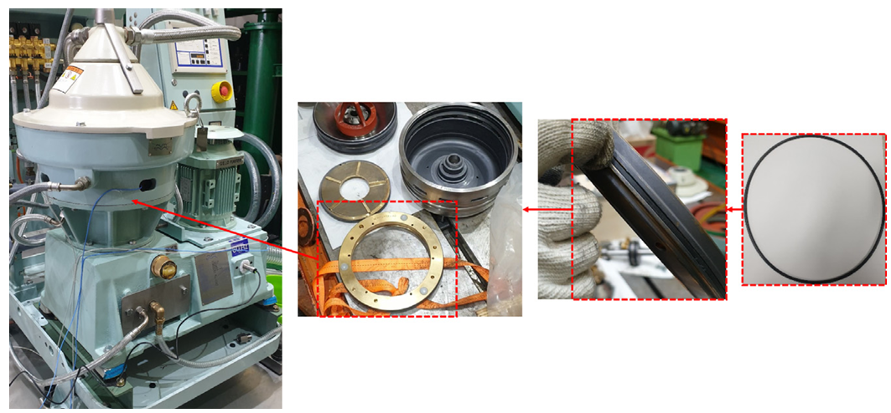

A Study on the Development of a Failure Simulation Database for Condition Based Maintenance of Marine Engine System Auxiliary Equipment
Kim, J., Lee, T., Lee, S., Lee, J., Shin, D., Lee, W., and Kim, Y.*
Journal of the Society of Naval Architects of Korea 59(4), 200-206 (2022)doi →

A Study on the Development of Database and Algorithm for Fault Diagnosis for Condition Based Maintenance of Rubber Seal in Ancillary Equipment of Autonomous Ships
Lee, S., Kim, J., Lee, J., Kim, Y., Kim, S., and Lee, T.*
Journal of Applied Reliability 22(1), 48-58 (2022)doi →